VIEWING SIMULATION DATA WITH XSCHEM
Usually when a spice simulation is done you want to see the results, this is usually accomplished
with a waveform viewer. There are few open source viewers, like
GAW...
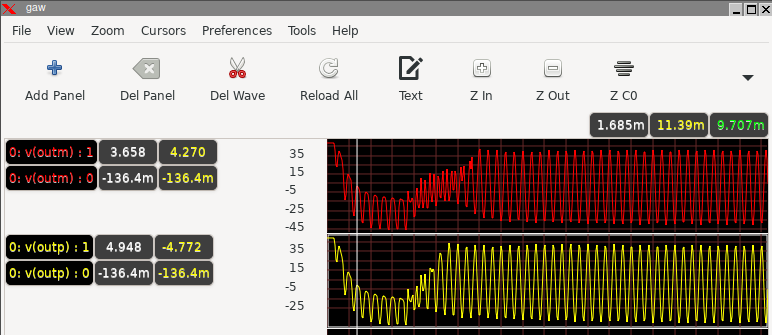
...Or ngspice internal plotting facilities:
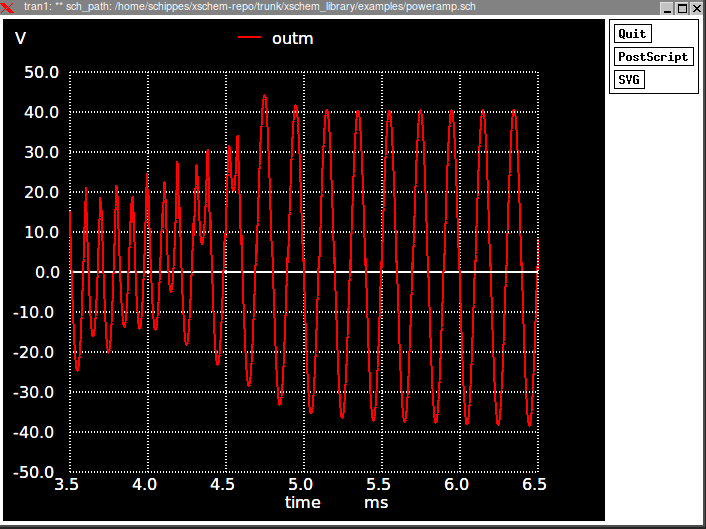
There is also an interesting commercial product from Analog Flavor, called
BeSpice (bspwave)
that offers a free of charge one year evaluation license for non commercial use:
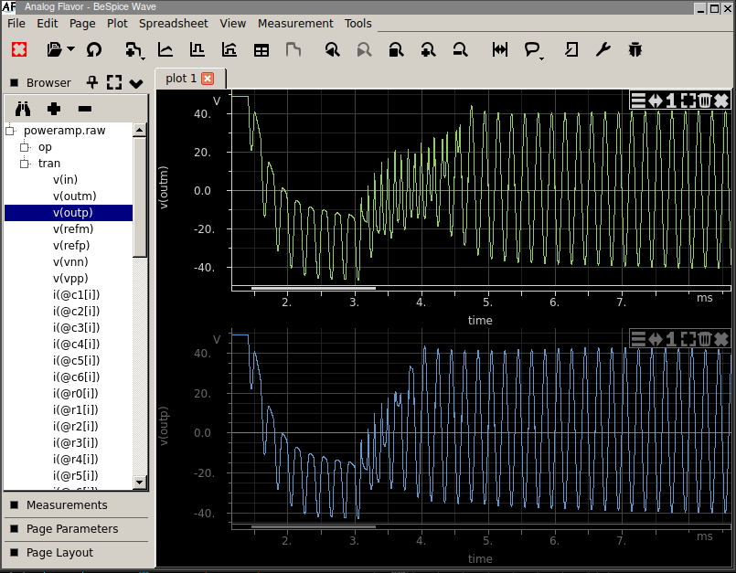
All these waveform viewers are supported by xschem and more can be added, just by giving the command line
to start the viewer to xschem in the Simulation-> Configure simulators and tools dialog:
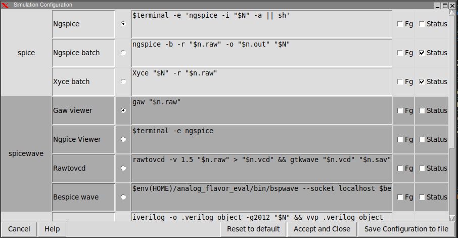
For gaw
and
bespice
xschem can automatically send nets to the viewer by clicking a net on the schematic
and pressing the Alt-G key bind or by menu Hilight->Send selected nets/pins to Viewer
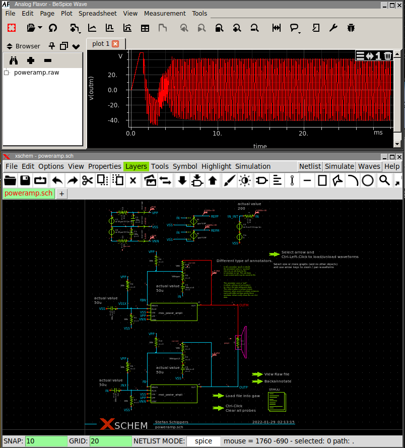
Using XSCHEM's internal graph functions
Xschem can now display waveforms by itself in the drawing area. in the Simulation menu there is an entry to add a graph: Add waveform graph. When this menu is pressed a box can be placed in the schematic:
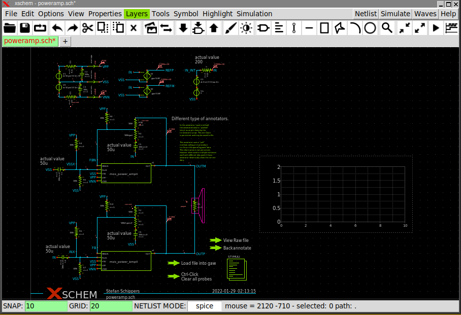Xschem graphs are embedded into a rectangle object. Resizing graphs is done in the same way as resizing a rectangle object. See the related page. To select a graph (to delete it or move it to a different position) click the left mouse button while in the area shown in this picture:
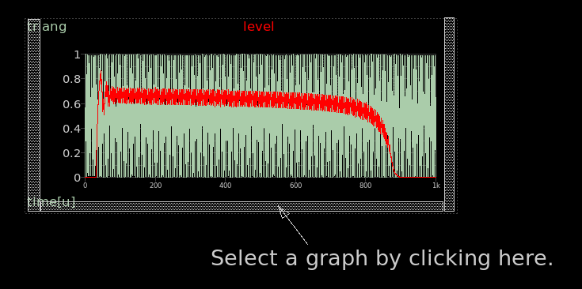
The next step is loading the simulation data, This is done by menu
Simulation->Load/Unload ngspice .raw file. This command loads a .raw file produced by a ngspice/Xyce
simulation. The file name is expected to be circuit.raw where
circuit.sch is the name of the schematic opened
in the drawing area. The raw file is searched for in the simulation/netlisting directory
Simulation ->set netlist dir.
After placing a graph box and loading simulation data a wave can be added. If you place the mouse on the inside
of the box, close to the bottom/left/right edges and click the graph will be selected.
You can also select a graph by dragging a selection rectangle all around it.
This tells xschem where
new nodes to be plotted will go, in case you have multiple graphs.
Then, select a node or a net label, press 'Alt-G', the net will be added to the graph. Here after a
list of commands you can perform in a graph to modify the viewport. These commands are active when
the mouse is Inside the graph (you will notice the mouse pointer changing from an arrow to a +).
if the mouse is outside the graph the usual Xschem functions will be available to operate on schematics:
- Pressing f with the mouse in the middle of the graph area will do a full X-axis zoom.
- Pressing f with the mouse on the left of the Y axis will do a full Y-axis zoom.
- Pressing Left/Right or Up/Down arrow keys while the mouse is inside a graph will move the waveforms to the left/right or zoom in/zoom out respectively.
- Pressing Left/Right or Up/Down arrow keys while the mouse is on the left of the Y-axis will move the waveforms or zoom in/zoom out in the Y direction respectively.
- Pressing the left mouse button while the pointer is in the center of the graph will move the waves left or right following the pointer X movement.
- Pressing the left mouse button while the pointer is on the left of the Y-axis will move the waves high or low following the pointer Y movement.
- Doing the above with the Shift key pressed will zoom in/out instead of moving.
- pressing a and/or b will show a vertical cursor. The sweep variable difference between the a and the b cursor is shown and the values of all signals at the X position of the a cursor is shown.
- Double clicking the left mouse button with the pointer above a wave label will allow to change its color.
- Pressing the right mouse button with the pointer above a wave label will show it in bold.
- Double clicking the left mouse button with the pointer in the middle of the graph will show a configuration dialog box, where you can change many graph parameters.
- Pressing the right mouse button in the graph area and dragging some distance in the X direction will zoom in the waveforms to that X range.
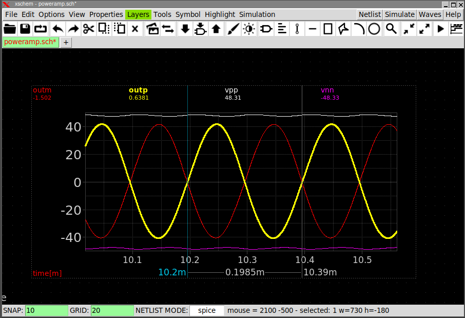
The graph configuration dialog box which is shown by left button double clicking inside the graph,
allows to change many graph attributes, like number of X/Y labels, minor ticks, wave colors, add waves
from the list of waves found in the raw file, select the dataset to show in case of multiple sweep simulations
and more.
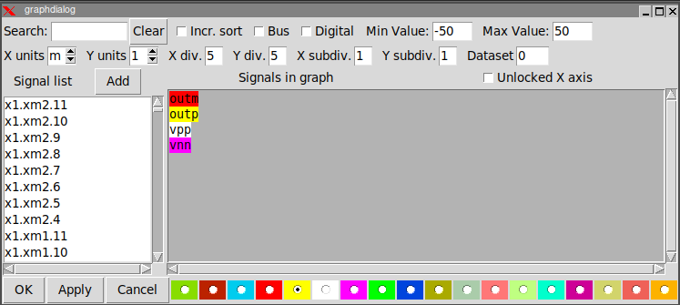
The text area with the colored wave names is just a text widget. You can manually edit it to add / remove waves,
or you can place the cursor somewhere in the text, select some waves from the listbox on the left, press the
Add button to have these waves added.
If you place the insertion cursor in the middle of a node name in the text area, you can click the color
radio buttons on the bottom to change the color. The Search entry can be used to restrict the list
of nodes displayed in the listbox. The Search entry supports regular expression patterns. For example,
^X will match all nodes that begin with X, xm[0-9]\. will match all nodes
containing xm followed by one digit and a dot.
Display bus signals
If you have a design where digital signals are present you might want to group some of these to form a
bus and display these bundled signals.
After placing a graph box and loading the simulation data as explained above, left-double click the graph
to show the configuration dialog, check the bus and digital check boxes,
use the Search text entry to restrict the list of signals,
then select all the signals you want to show as a bus and click the Add button. Also set the
Min value and the Max value of the signals in the bus. This information is needed
by Xschem to calculate the logic high and logic low thresholds. Currently the logic '1' is set at 80%
of the signal min-max range and the logic '0' level is set at 20% of the signal range.
After pressing the Add button a bus is shown in the text area. The first field is a template
BUS_NAME that you should change to give a meaningful name to the bus. The bus name is separated from
the rest of bits by a , or ; character.
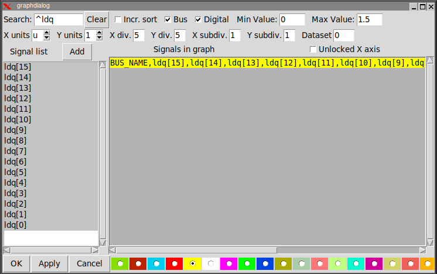
You will then see your bussed signal in the graph:
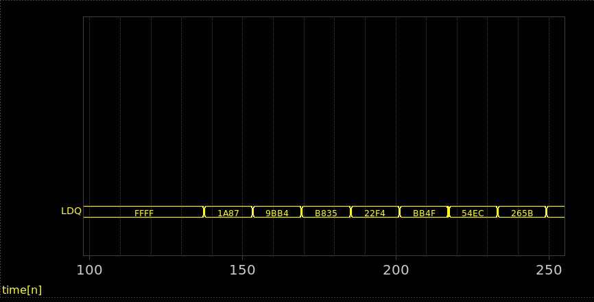
If you have bussed signals in the schematic , like LDA[12:0] and your graph has the
Digital and Bus checkboxes set you can simply add the LDA bus to the graph by
clicking the net in the schematic (with the configuration dialog open) and pressing Alt-G:
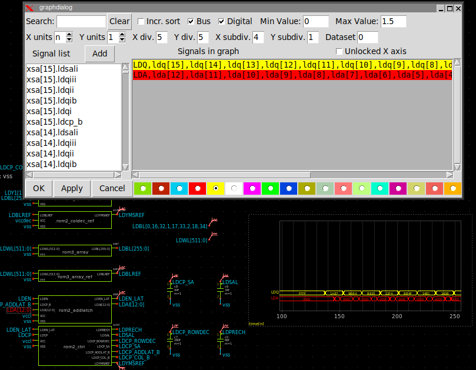
You can add many signals to see them stacked in a very compact view:
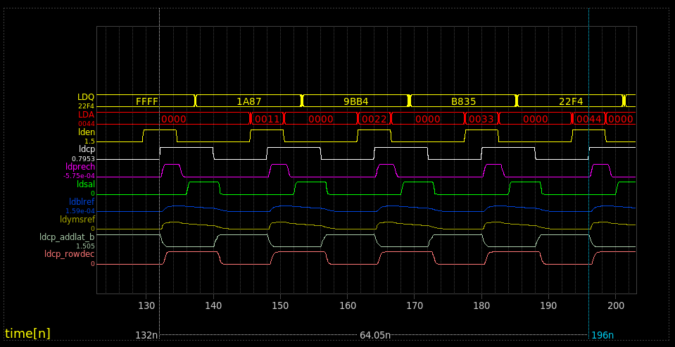
It is possible to switch the graph to analog mode, by unchecking the Digital checkbox in the graph
configuration dialog, to better see the waveforms. Switching back to Digital yields the previous view.
In analog mode buses are not shown, but are not lost. You will see them again when switching back to
Digital mode.
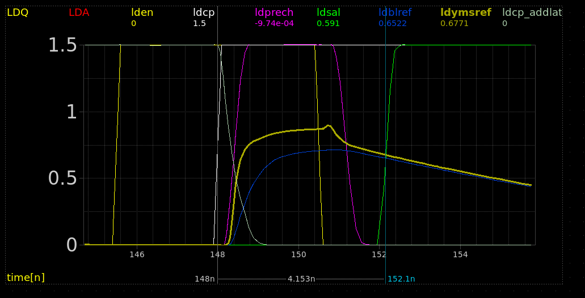
Many graphs can be created in a schematic, and the configuration of all graphs (viewport, list of signals,
colors) is saved together with the schematic. If you re-run a simulation just unloading/loading the data from
the simulation menu will update the waveforms.
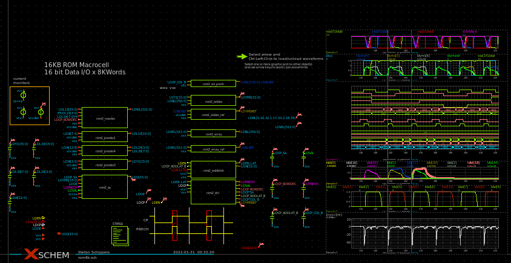
Expression evaluation on waves
It is possible to enter math expressions combining simulation data, for example multiply current and
voltage to get the power. The syntax of expressions uses postfix (RPN) notation. When entering an expression
use double quotes in the graph edit attribute dialog box, so the expression will be considered as a single
new wave to display. Operands are loaded onto a stack like structure and then evaluated.
The syntax is:
"alias_name;operand operand operator ..."
Example:
"supply power;i(vcurrvnn) vnn * i(vcurrvpp) vpp * +"
that means: i(vcurrvnn) * vnn + i(vcurrvpp) * vpp.
"i(vcurrvnn) 1e6 *"
that means: i(vcurrvnn) * 1e6.
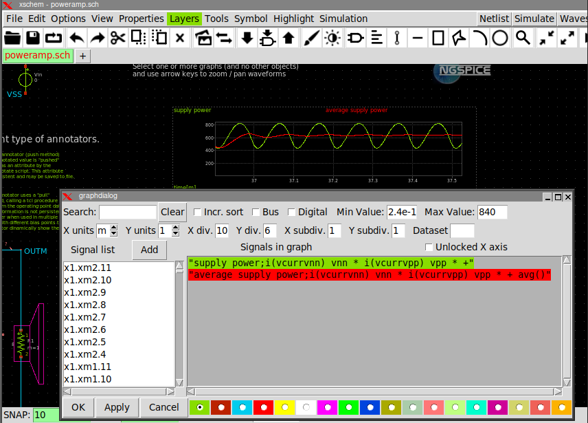
The optional alias_name is just a string to display as the wave label instead of the whole expression.
The following operators are defined:
2 argument operators:
- + Addition
- - Subtraction
- * Multiplication
- / Division
- ** Exponentiation
- exch() Exchange top 2 operands on stack
- ravg() Running average of over a specified time window
- del() Delete waveform by specified quantity on the X-axis
1 argument operators:
- sin() Trig. sin function
- cos() Trig. cos function
- tan() Trig. tan function
- sqrt() Square root
- sgn() Sign
- abs() Absolute value
- exp() Base-e Exponentiation
- ln() Base-e logarithm
- log10() Base 10 logarithm
- db20() Value in deciBel (20 * log10(n))
- avg() Average
- prev() Delay waveform by one point (at any x-axis position take the previous value)
- deriv() Derivative w.r.t. graph sweep variable
- deriv0() Derivative w.r.t. simulation (index 0) sweep variable
- integ() Integration
- dup() Duplicate last element on stack